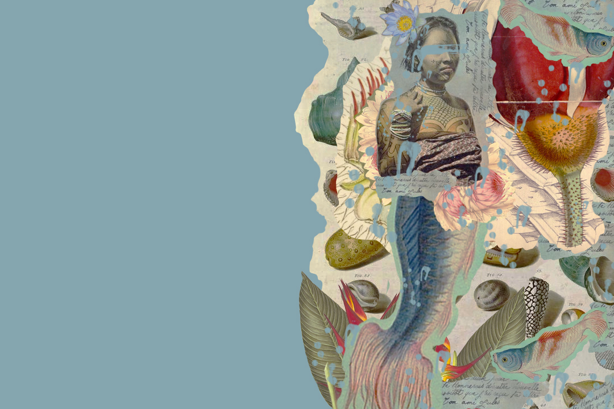

LENDA DA IARA
Iara é uma personagem do folclore brasileiro, ela também é conhecida como a “mãe das águas”. De acordo com a lenda, de origem indígena, Iara é uma linda sereia: ela tem corpo de mulher da cintura para cima e de peixe da cintura para baixo.